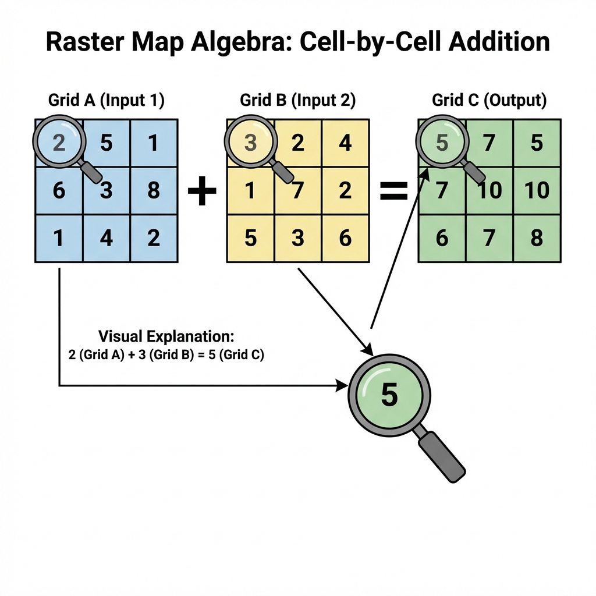
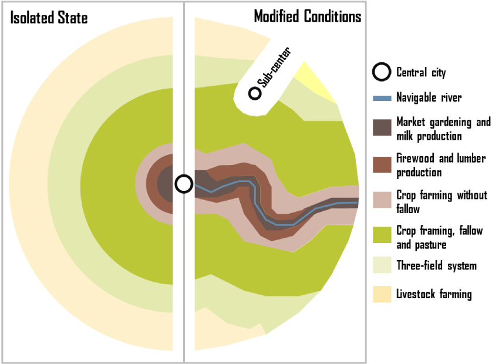

The Analysis Workflow
Analysis usually falls into four categories. Before clicking a tool, identify which category your question belongs to:
Finding "Where is it?" (Query)
Calculating Distance, Area, & Stats
Stacking layers to find intersections
Networks and Surfaces
1. Selection & Query
Attribute Query (SQL): Selecting features based on their data table.
Example: SELECT * FROM Cities WHERE Population > 1,000,000
Spatial Query: Selecting features based on location.
Example: "Select all schools within 1 mile of a hazardous waste site."
- AND restricts results (must meet both criteria).
- OR expands results (can meet either criteria).
2. Vector Overlay Analysis
Overlay combines the geometry and attributes of two layers. It is the "cookie cutter" of GIS.
AND (Common area only)
OR (All areas combined)
Cookie Cutter (Input cut by Boundary)
Case Study: Do Bars Cause Crime?
A classic application of the Spatial Join is connecting social behaviors to location. A graduate student researcher once asked: "Does the density of alcohol licenses in a neighborhood correlate with the cost of policing that neighborhood?"
The Data Problem
She had two incompatible datasets:
- Alcohol Licenses (Points): A spreadsheet from the Texas government with addresses of every bar and liquor store.
- Crime Reports (Polygons/Points): Police data summarized by patrol districts.
You cannot simply open these in Excel and comparing them. They share no common ID. They only share Location.
The GIS Solution: Spatial Join
By performing a Point-in-Polygon join, she summed the number of alcohol licenses falling inside each police district.
The Result: A strong linear correlation ($R^2 > 0.7$). She was able to calculate a "Societal Cost" per license. This allowed policymakers to argue that alcohol permit fees should be raised to cover the specific police costs they generate. That is the power of turning where into how much.
3. Raster Map Algebra
Raster analysis often treats layers like math variables. If you have two grids, you can add them, subtract them, or find the average. This is essential for Site Suitability Modeling.

Figure 5.4: Basic Map Algebra operations. Notice how 'Add' sums the value of each overlapping cell.
Interactive: Suitability Studio
You are siting a new Eco-Lodge. Adjust the importance (weights) of the three factors below to see which site wins. (Note: Everything must sum to 100%).
Total Weight: 100% (Balanced)
Spatial Theory: Von Thünen's Isolated State
Before GIS existed, economists were already thinking spatially. Johann Heinrich von Thünen (1783–1850) was a German landowner who developed one of the first formal models of spatial economics—explaining how distance from a market affects land use.

Von Thünen's model: Concentric rings modified by a navigable river
The "Isolated State" Assumptions
Von Thünen imagined a perfectly isolated city-state with:
- A single central market town
- Uniform flat terrain (an isotropic plain)
- Equal soil fertility everywhere
- No roads—only horse-drawn carts radiating outward
- Farmers who maximize profit (economic rationality)
The Concentric Ring Pattern
Under these conditions, land use arranges itself in concentric rings based on transportation cost:
- Ring 1 (Closest): Intensive farming—dairy, vegetables, fruits. These are perishable and heavy, so transport cost is critical.
- Ring 2: Forestry—wood for fuel and building is bulky and expensive to move.
- Ring 3: Grain crops—less perishable, can travel farther economically.
- Ring 4 (Farthest): Ranching/livestock—animals walk themselves to market!
🚢 The Transportation Modification
Von Thünen recognized that his idealized rings would be distorted by transportation infrastructure. A navigable river or road extending from the city would:
- Lower transport costs along its corridor
- Stretch the rings outward like pulling taffy—intensive uses extend farther from the city along the river
- Create a "wedge" or "finger" of inner-ring land uses penetrating into outer zones
Modern Implication: This is why you see vegetable farms and dairies along highways and rail lines far from cities, while remote areas without good transportation remain as pasture or forest—exactly as Von Thünen predicted 200 years ago!
Von Thünen's model is the intellectual ancestor of cost-distance analysis and accessibility modeling in GIS. When you calculate "travel time to the nearest hospital" or model urban sprawl, you're applying the same logic: distance (or travel cost) from a central point determines spatial patterns. Modern GIS simply replaces his uniform plain with real terrain, real roads, and real friction surfaces.
4. Neighborhoods & Proximity
Buffering
Creating a zone of a specific distance around a feature. Useful for regulatory zones (e.g., "No drilling within 500ft of a house").
- Constant Buffer: Same width everywhere.
- Variable Distance: Width based on an attribute (e.g., wider buffer for larger rivers).
- Multi-ring Buffer: Concentric rings showing levels of influence.
Interpolation
Predicting values between known points. We use this to turn weather station points into a continuous temperature map (Isolines).
Areal Interpolation: Estimating data for one set of areas (e.g., zip codes) from another set (e.g., census tracts). This is critical when data boundaries don't align.
5. Network Analysis: The Science of Connectivity
While Euclidean Distance measures "as the crow flies," Network Analysis measures distance along a structured path—like a road, pipeline, or blood vessel. It is the study of how things move through a system.
Network Components
- Edges: The paths (roads, pipes).
- Nodes: The intersections or end points.
- Impedance: The "cost" of travel (time, distance, fuel).
- Turns: Rules about where you can go (e.g., no left turn).
Common Applications
- Best Route: Finding the fastest way from A to B.
- Service Area: What areas can be reached within 10 minutes?
- Closest Facility: Which ambulance is nearest to this accident?
Interactive: Mobility Explorer
Click anywhere on the map below to generate a 15-minute walk-shed (Service Area) based on the local street network. Notice how the shape isn't a perfect circle—it follows the "grain" of the infrastructure.
Spatial Solutions: The "Pixie" Mobile Pharmacy
How do you deliver healthcare when there is no hospital? A student team designed "Pixie," an automated medication dispenser for Mars, but found a critical use case on Earth: Rural Accessibility.
The Space Problem
On a 3-year Mars mission, drugs degrade due to radiation. You need an automated, AI-driven inventory system to synthesize or dispense doses without a pharmacist.
The Earth Application
"Medical Deserts": Many rural regions are hours from a CVS or hospital. A "Mobile Pixie" van could use Network Analysis to route itself to isolated communities, dispensing prescriptions like an ice cream truck for health.
Geographic Inquiry: The "Food Mile" Paradox
We often assume "Organic" and "Local" are synonyms for "Sustainable." But geography teaches us to measure, not assume. Using Network Analysis, students in Texas tracked the origin of produce to test this hypothesis.
The Experiment
They calculated the network distance (road miles) for apples, eggs, and milk at three types of stores:
- Farmer's Markets
("Local") - Grocery Chains
(H-E-B) - Natural Stores
(Whole Foods)
Ironically, the "Natural" stores often had the highest food miles. Why? To stock 100% organic produce year-round, they had to source from global networks. Conventional stores stuck to regional distribution hubs.
The Gentrification Signal: By mapping the catchment areas (where customers come from), they found that conventional stores had small, local catchments. The downtown Farmer's Market, however, pulled customers from the entire city. In urban studies, the arrival of a Farmer's Market is now considered a Leading Indicator of Gentrification—signaling a demographic shift often before property values even spike.
6. Challenges in Spatial Analysis
Spatial analysis is powerful, but it's prone to unique errors that non-spatial statistics often miss. As an analyst, you must watch out for these two traps:
MAUP
Modifiable Areal Unit Problem.
The results of shared data (like density) change depending on how you draw the boundaries. If you analyze by Zip Code vs. Census Tract, you might get opposite conclusions. This is the mathematical basis for Gerrymandering.
Ecological Fallacy
The trap of aggregation.
Assuming that what is true for a large group (an entire county) must be true for every individual in that county. For example, a "wealthy" neighborhood still contains people living in poverty. GIS often hides individual variation inside polygon averages.
Deep Dive: The Gerrymandering Trap
MAUP states that results change depending on how you draw the boundaries.
Imagine a state that is 60% Blue voters and 40% Red voters.
- Scenario A: Divide it into 5 vertical strips? Blue wins all 5.
- Scenario B: Divide it into specific shapes? Red could win 3 of 5.
The underlying people (the data) never changed. Only the aggregation units changed.
"Is there a solution?"
NO.
It is an inherent property of aggregating spatial data. You can only declare your boundaries and defend your choice.